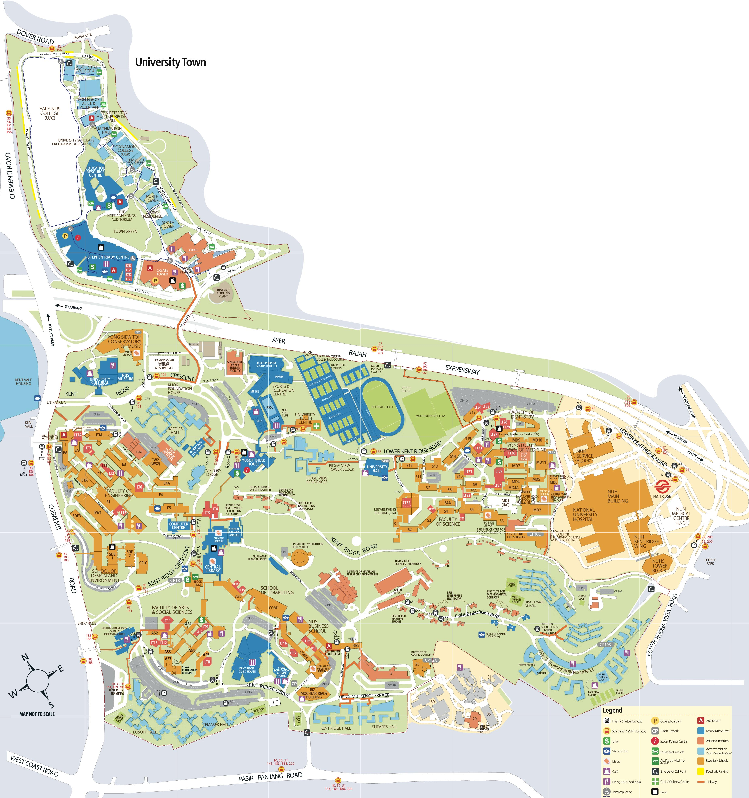

Audeamus - Find what happens around you -->
All Categories



Audeamus is an application that uses a new approach to draw attentions of NUS students to events happening around campus. By pinpointing on-campus events on the NUS Kent Ridge campus map, NUS fellows can easily navigate events and have an overview of all events around campus. Students can choose to find events happening in a certain period of time, as well as filter events by category. They can also see event description in detail, and bookmark events that they are interested in. Audeamus also supports the functionality of sharing events on popular social network platforms.
If you have any questions, feel free to contact us at contact@im.whatsword.com.
Remind before this event.